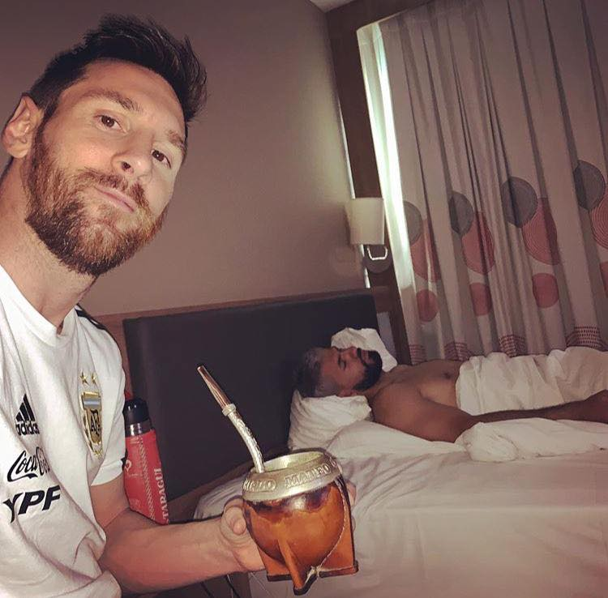

Noticias
¿Quieres Ayudar A Boca?
Realiza Una Encuesta!
Proximos Partidos
Crear Una Cuenta
Iniciar Sesión
Ingrese su email para realizar la encuesta:
¿Cuál es tu edad?
Menos de 18 años
18-30 años
30 años o más
¿Cuál es tu género?
Femenino
Masculino
Otro
¿Qué red social utilizas con más frecuencia?
Facebook
Instagram
Twitter (X)
Otras
¿Cuál es tu deporte favorito del club?
Fútbol
Baloncesto
Voley
Otro
De nuestros jugadores, ¿Cuál es tu apodo favorito?:
"Fat" Fabra
"Cold" Fernández
Edison "Gagani"
El Chicho Siesta
Boca busca una mascota, ¿Cuál prefieres?:
Perro
Gato
Tiranosaurio Rex
Mono